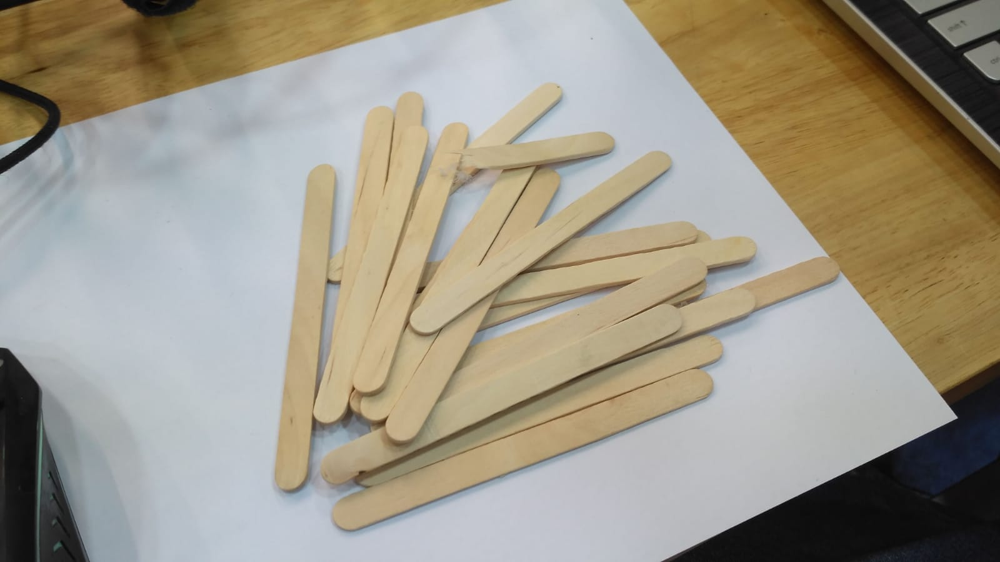
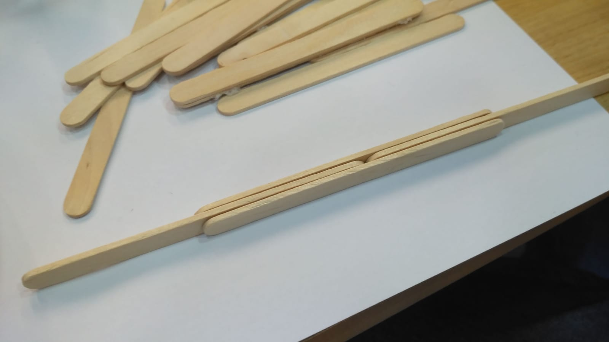
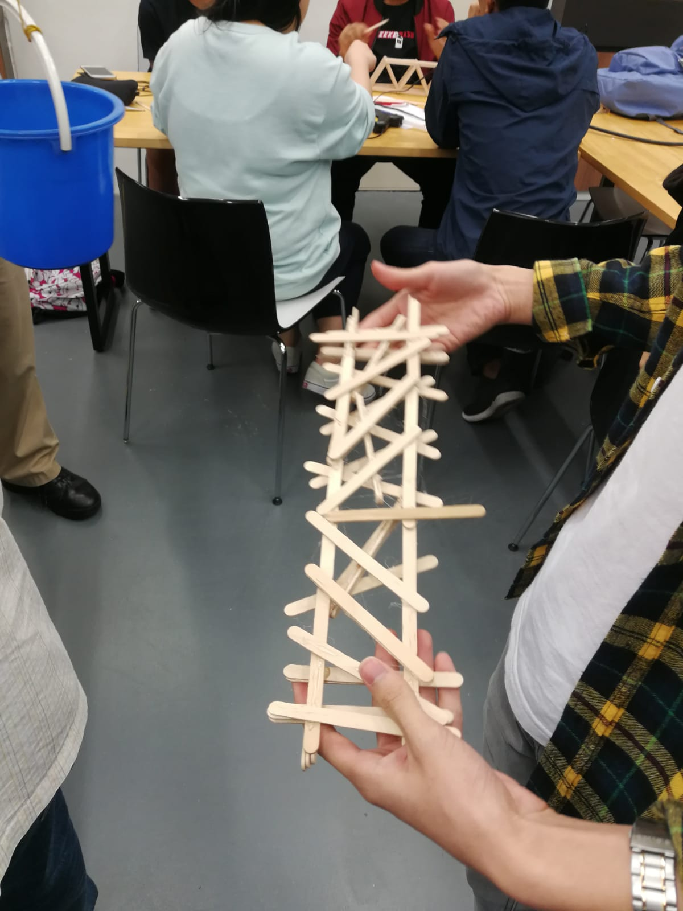
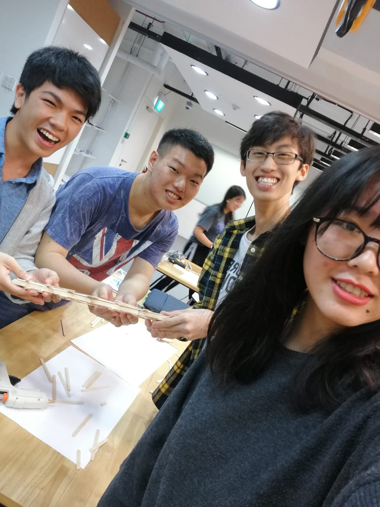
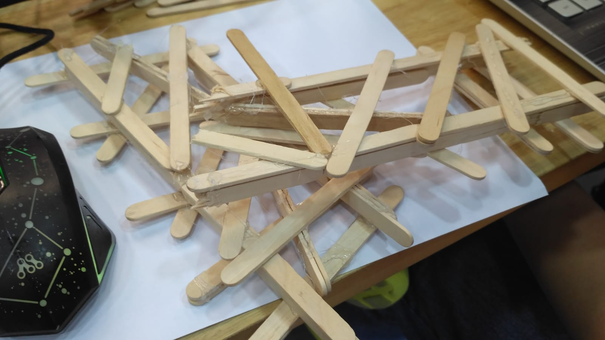
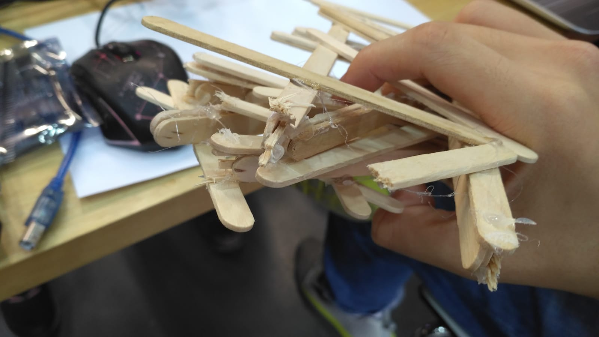

Popsicle Bridge
Resources
We are only provided with 2 packet of popsicle sticks and a hot glue gun.
Mission Statement
To make a bridge out of popsicle stick that will span a length of 30cm and the width of 5cm
Design 1
We found out that by letting the popsicle lay on its side, we found out that it is stronger. We will call this structure the interlocking popsicle
Using this design idea, we procced to continue building the bridge by continuing the above structure and having two interlocking popsicle parallel to each other. After that we add a few supporting structures between the two interlocking popsicle
and... we are done!
 The award winning bridge stucture made of popsicle!!!
With that we are ready for the competition
.
.
.
Conclusion
After holding onto the pressure of life(metal tools) on its back for too much
It finally broke
The bridge was able to whitstand the weight of 6 hammers, 2 claw hammers, and some other metal tools before breaking.
Looking at the bridge we can see where the weak point was on the bridge
It was on one of the interlocking popsicle
Nevertheless, the bridge supported more weight then what we originally thought it would.
However, we think we could have done better if we made more than 2 of the interlocking popsicle. Funnily enough, the bridge that won the competition was made with the same interlocking popsicle system. But rather than just having 2 of them, they made a whole block of it...